Gestes et postures : se protéger au travail
Comprendre comment le corps se fatigue, adapter son geste et son poste, choisir et porter les bons équipements de protection individuelle (EPI), puis apprendre à manipuler un extincteur — une démarche inspirée des référentiels INRS. Cette plateforme accompagne la journée de 7 heures et reste disponible ensuite, sur tous vos écrans.
Programme de la journée
Une journée de 7 heures (8h30–12h00 puis 13h00–16h30). La partie gestes et postures se termine à 14h30 ; les deux dernières heures (14h30–16h30) sont consacrées à l'incendie et à la manipulation des extincteurs. Le déroulé ci-dessous est indicatif : le formateur l'ajuste au groupe et aux situations de travail apportées par les participants.
| Horaire | Contenu | Module |
|---|---|---|
| 8h30–9h00 · accueil | Présentation, attentes et situations de travail des participants | — |
| 9h00–10h15 · comprendre | Les TMS, leurs mécanismes, les familles de facteurs de risque | 01 · 02 |
| 10h15–10h30 | Pause | — |
| 10h30–12h00 · le corps et la pratique | Principes de biomécanique (charge, levier, zones de posture), gestes et postures de référence, mises en situation | 03 · 04 |
| 13h00–13h10 · réveil | Réveil musculaire pour relancer l'après-midi | 07 |
| 13h10–13h45 · mon poste | Analyser sa situation de travail, choisir une aide ou une amélioration | 05 |
| 13h45–14h05 · EPI | Cadre, choix, port et entretien des équipements de protection individuelle | 06 |
| 14h05–14h30 · bilan TMS | Synthèse de la partie gestes et postures ; auto-évaluation (12 questions) en classe | 08 |
| 14h30–15h15 · incendie, théorie | Le feu, les classes de feu, les extincteurs, les règles d'attaque, l'alerte et l'évacuation ; démonstration du formateur | 09 |
| 15h15–15h25 | Briefing de sécurité et mise en place de l'exercice | 09 |
| 15h25–16h15 · incendie, pratique | Manipulation de l'extincteur, puis attaque d'un feu de formation par chaque stagiaire | 09 |
| 16h15–16h30 · bilan | Débrief de l'exercice, synthèse de la journée et questionnaire de satisfaction | — |
Comprendre les TMS
Un trouble musculo-squelettique n'apparaît presque jamais d'un coup : c'est un dommage corporel différé, résultat d'une accumulation de microtraumatismes sur les tendons, muscles, nerfs et articulations. Le comprendre, c'est pouvoir agir en amont.
1re cause
Les TMS sont la première cause de maladie professionnelle reconnue en France (Assurance Maladie – Risques professionnels).
Manutention
La manutention manuelle fait partie des principales causes d'accidents du travail, avec les chutes de plain-pied.
Cumul
Ce qui use, c'est la répétition et la durée : un geste anodin répété des milliers de fois peut devenir un danger.
Prévenable
Un TMS se prévient en agissant sur le geste, mais surtout sur le poste, l'organisation et les équipements.
Le mécanisme d'apparition du dommage
Danger (charge, geste, cadence) → situation dangereuse (exposition répétée) → événement déclencheur → dommage. Le risque global s'exprime comme Risque = Probabilité × Gravité : deux leviers d'action existent toujours — réduire la fréquence d'exposition, ou réduire la gravité potentielle de chaque exposition.
Repères chiffrés officiels
Chiffres relevés sur les sites de l’Assurance Maladie – Risques professionnels, de l’INRS et de la Carsat Sud-Est. Les années et les périmètres diffèrent d’une source à l’autre : on les cite avec leur source, on ne les additionne pas.
| Repère | Chiffre | Source |
|---|---|---|
| Part des TMS dans les maladies professionnelles | 88 % (2024) | ameli, TMS : pourquoi et comment agir |
| Part des TMS dans les maladies professionnelles reconnues | plus de 80 % | INRS, statistiques TMS |
| Maladies professionnelles liées aux TMS, Sud-Est | 86 % (2023) | Carsat Sud-Est, les TMS |
| Manutentions manuelles et accidents du travail | Origine de 50 % des accidents du travail, dont un tiers de mal de dos (2024) | ameli |
| Manutention manuelle seule | « près de 1 accident du travail sur 2 » | Carsat Sud-Est, DI 159 |
| Journées de travail perdues | plus de 20 millions (TMS et lombalgies liées aux manutentions manuelles, 2024) | ameli |
| Coût | 2,4 milliards d’euros de cotisations chaque année ; coûts indirects estimés à 5 fois les coûts directs | ameli |
| Durée moyenne d’un arrêt pour accident lié au dos | 3 mois | ameli |
| TMS du membre supérieur ou inférieur, tableau 57 | environ 40 000 cas par an, stabilisé depuis 2012 ; en 2021, plus de 11 millions de journées perdues et 1 milliard d’euros | INRS, statistiques TMS |
Qui peut aider ?
- TMS Pros : démarche de prévention de l’Assurance Maladie – Risques professionnels, pour prévenir ou réduire durablement les TMS.
- Subvention « Prévention des risques ergonomiques » : pour les entreprises de 1 à 49 salariés (page ameli) ; la Carsat Sud-Est l’indique pour la manutention, les postures douloureuses et les vibrations.
- Formations proposées par la Carsat Sud-Est : « personne ressource » (42 h), « chargé de prévention » (28 h), formations d’animateurs par secteur ; financement possible jusqu’à 70 % HT selon la Carsat Sud-Est.
- Réseau TMS PACA : DREETS, ARACT PACA, MSA et consultants référencés.
Pour aller plus loin (INRS)
- ED 6161 : méthode d’analyse de la charge physique de travail
- ED 6460 : limiter la manutention manuelle
- ED 6467 : pousser et tirer
- ED 6317 : prévention des lombalgies
- OiRA : outils en ligne d’évaluation des risques
Références citées dans la brochure Carsat Sud-Est DI 159 (12/2022).
Quatre familles de facteurs de risque
Le geste et la charge ne sont qu'une partie de l'équation. L'organisation du travail, le vécu psychosocial et l'environnement pèsent tout autant dans l'apparition et l'aggravation des TMS.
Biomécanique
Répétitivité des gestes, efforts excessifs, postures contraignantes, port de charges.
Organisationnel
Cadences, pression horaire, charge de travail variable, pauses et rotation des tâches.
Psychosocial
Exigences de rythme, autonomie dans le geste, soutien collectif — facteur reconnu d'aggravation des TMS.
Environnemental
Froid, chaleur, sols glissants, éclairage, espace de travail encombré, bruit ; horaires décalés ou de nuit.
Ces familles se cumulent : une charge modérée, portée vite, dans un espace encombré et au froid, devient une situation à risque. Agir sur un seul facteur (le geste) ne suffit pas : c'est l'ensemble de la situation de travail qu'il faut regarder.
Biomécanique appliquée
Pas un cours d'anatomie savante : quelques principes mécaniques simples, qui expliquent pourquoi certains gestes coûtent beaucoup plus cher au corps que d'autres, à charge identique.
À éviterLa combinaison la plus délétère
- Flexion du tronc + torsion du rachis en même temps (ex : attraper un colis au fond du véhicule en pivotant)
- Le disque intervertébral encaisse mal la torsion sous charge : situation la plus documentée comme génératrice de lombalgies et hernies
À privilégierLe réflexe qui change tout
- Pivoter avec les pieds, pas avec le dos : orienter le bassin avant de déplacer la charge
- Fléchir les genoux plutôt que le dos ; garder le dos gainé, proche de sa position naturelle
Morphologie et gabarit individuel
Chacun n'a ni la même taille, ni la même force, ni la même souplesse. Les repères ci-dessus sont des principes mécaniques universels — leur application (hauteur de prise, largeur d'appui, rythme) se règle sur son propre gabarit. Un poste ou un geste qui « passe » pour un collègue peut être en zone rouge pour un autre : c'est une information à faire remonter, pas une faiblesse à cacher.
Gestes & postures de référence
Application des principes du module 3 aux situations de travail les plus courantes. Les exemples sont volontairement généraux : chaque participant les transpose à son poste.
| Situation | Risque principal | Zone | Geste à privilégier |
|---|---|---|---|
| Soulever une charge au sol | Flexion du tronc, levier long | Rouge | Se placer face à la charge, pieds écartés, genoux fléchis, dos gainé, charge collée au corps ; fractionner si possible |
| Porter / déplacer | Charge éloignée du corps, vision réduite | Orange | Tester le poids avant de s'engager, charge près du tronc, trajet dégagé, pivoter avec les pieds |
| Poser ou prendre en hauteur | Bras au-dessus des épaules, déséquilibre | Rouge | Zone de prise entre les genoux et les épaules ; marchepied stable plutôt que la pointe des pieds |
| Pousser / tirer un chariot | Efforts de poussée-traction, chocs | Orange | Pousser plutôt que tirer, corps engagé, mains entre hanches et épaules, sol dégagé |
| Travail assis (écran, poste fixe) | Posture statique, nuque et épaules | Orange | Écran à hauteur des yeux, avant-bras soutenus, pieds au sol, micro-pauses actives |
| Station debout prolongée | Fatigue des jambes et du dos | Orange | Alterner les appuis, repose-pied ou tapis si possible, changer de position régulièrement |
| Geste répété (saisie, tri, conditionnement) | Répétitivité, poignets et épaules | Orange | Plan de travail à bonne hauteur, objets à portée, varier les tâches, pauses de récupération |
Galerie — gestes et situations
Trois situations de manutention illustrées : porter, pivoter, pousser. Chaque image se lit avec ses points de vigilance et ses limites.
Porter une charge près du corps
Déplacement d’un carton tenu contre le tronc.
Lire l’image
Points de vigilance. Vérifier poids, visibilité du trajet, adhérence des prises et distance à parcourir.
Principes. Garder la charge proche et les coudes près du corps ; réduire le trajet et privilégier une aide.
Limites. La proximité de la charge ne suffit pas à rendre acceptable un effort excessif.
Pivoter avec les pieds
Changement de direction avant une dépose.
Lire l’image
Points de vigilance. Examiner l’orientation des pieds, du bassin et du tronc ; éviter flexion et torsion combinées.
Principes. Réorienter les appuis par petits pas et déplacer l’ensemble du corps ; préparer la dépose.
Limites. Le mouvement complet n’est pas démontré par une seule photographie.
Pousser un chariot chargé
Déplacement d’un chariot à plateau.
Lire l’image
Points de vigilance. Contrôler roues, stabilité du chargement, visibilité, pente et effort de démarrage.
Principes. Adapter la hauteur de prise et favoriser une poussée maîtrisée lorsque le trajet le permet.
Limites. Un chariot peut imposer des efforts élevés ; son choix dépend du sol et de la charge.
Étude de cas — repérer les risques
Deux situations à analyser en groupe : observer, expliquer, puis proposer une amélioration adaptée au travail réel. Ce sont des cas d’analyse, pas des gestes certifiés.
Prise initiale d’un carton au sol
Prise initiale au sol, avant le soulèvement.
Lire l’image
Points de vigilance. Observer l’inclinaison du tronc, la distance carton-corps et la qualité réelle des prises. La masse et le contenu ne sont pas visibles.
Principes. Réduire le port manuel, surélever la prise et utiliser une aide adaptée. Si la prise reste nécessaire, rapprocher la charge, assurer les appuis et éviter la torsion.
Limites. Une image fixe ne valide ni un geste idéal ni la capacité à soulever. G01 sert à analyser la prise initiale, sans étiquette de geste de référence.
Atteindre avec une plateforme protégée
Approche d’un petit carton depuis une plateforme protégée.
Lire l’image
Points de vigilance. Vérifier stabilité, verrouillage, garde-corps, fermeture de l’accès, proximité de l’étagère et bras sous l’épaule.
Principes. Privilégier un stockage accessible au sol. Utiliser une plateforme adaptée ; monter mains disponibles avec appuis sûrs. La scène montre deux pieds posés et une main sur la protection, l’autre touchant un carton encore soutenu par l’étagère.
Limites. Ne pas exiger simultanément trois points d’appui et un port à deux mains. L’accès et le transfert doivent suivre la notice ; une image ne certifie pas l’équipement.
Adapter son poste de travail
Les contraintes varient d'un poste à l'autre : port de charges, gestes répétés, posture statique, station debout. Cette fiche donne des repères communs ; chaque participant l'applique à son propre poste avec la grille ci-dessous.
Dos (lombaires)
Lombalgies, hernies discales — port de charges, flexion-torsion, posture assise prolongée
Épaule
Tendinopathies — gestes au-dessus de la ligne d'épaule, travail bras levés
Poignet
Canal carpien, tendinites — saisie répétée, efforts de préhension, poste informatique
Genoux
Fatigue articulaire — station debout prolongée, déplacements nombreux, flexions répétées
| Solution | Usage | Bénéfice TMS |
|---|---|---|
| Chariot, diable, transpalette | Déplacement de charges | Supprime ou réduit le port direct |
| Table ou plan de travail réglable | Postes de manipulation, de conditionnement | Ramène la prise entre les genoux et les épaules |
| Rangement réorganisé | Charges lourdes et fréquentes | Place les objets lourds à hauteur de taille, à portée de main |
| Siège réglable, repose-pieds, écran à hauteur des yeux | Travail assis | Réduit la posture statique et les tensions nuque-épaules |
| Ceinture lombaire de maintien | Parfois proposée pour le port répété | Efficacité préventive non démontrée : ne remplace ni la réduction de la charge, ni la technique |
Grille : analyser sa situation de travail
À remplir pendant la session sur une situation réelle de votre poste. Elle reste sur votre appareil ; rien n'est enregistré ni transmis.
- La tâche : quelle charge (poids, volume, prises), quelle fréquence, quelle durée ?
- La posture : où est la charge par rapport au corps ? flexion, torsion, bras levés ?
- L'espace : sol, encombrement, hauteur de prise et de dépose, éclairage ?
- L'organisation : cadence, interruptions, possibilité de faire à deux, de fractionner ?
- Les moyens : aide mécanique disponible ? adaptée ? en bon état ?
- La piste d'amélioration : que pourrait-on supprimer, rapprocher, alléger, aider ?
Postes et aides en images
Comparer un poste réglé, un contre-exemple, et les aides qui réduisent le port manuel.
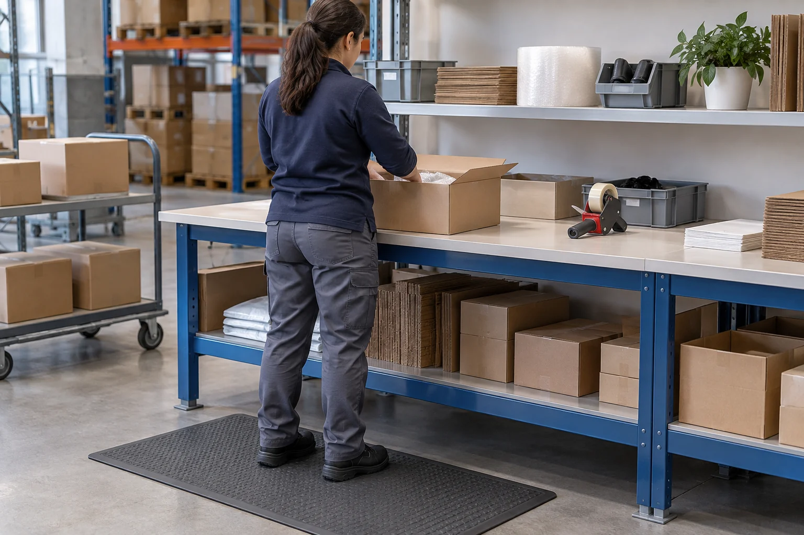
Poste de travail debout bien réglé
Conditionnement debout à un plan de travail.
Lire l’image
Points de vigilance. Vérifier portée, hauteur du coude, précision ou force requise, et stabilité du tapis.
Principes. Adapter la hauteur à la tâche, rapprocher les objets et alterner les positions.
Limites. Une hauteur unique et un tapis ne suppriment pas les risques liés à la station debout prolongée.
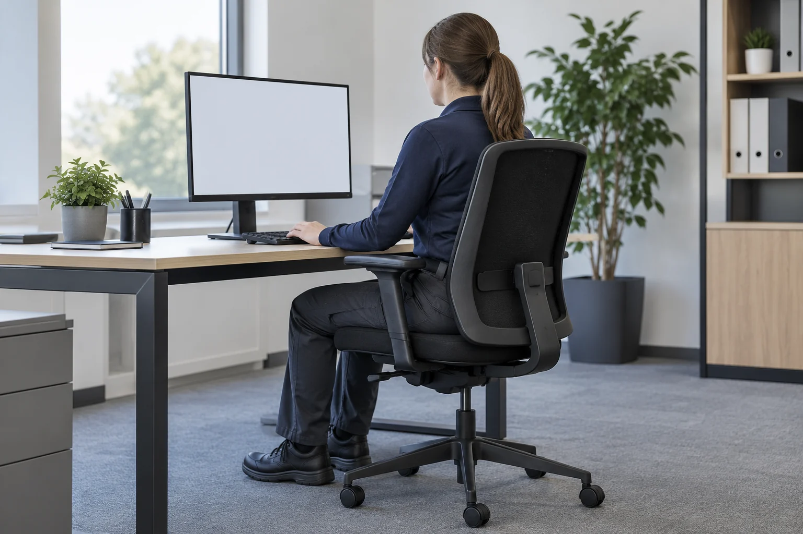
Poste assis bien réglé
Travail sur écran avec réglages favorables.
Lire l’image
Points de vigilance. Observer appuis des pieds, soutien du dos, position des avant-bras, reflets et distance écran.
Principes. Ajuster siège et écran à la personne ; proposer un repose-pieds si nécessaire ; varier l’activité.
Limites. Le haut de l’écran près de la hauteur des yeux est un repère à adapter, notamment aux verres progressifs.
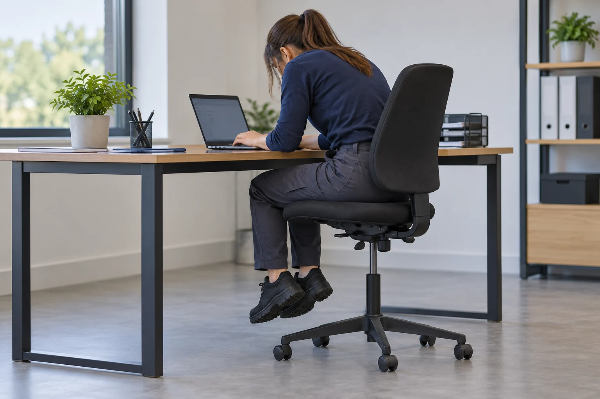
Poste assis mal réglé — contre-exemple
Poste volontairement mal réglé à comparer avec G06.
Lire l’image
Points de vigilance. Repérer écran bas, flexion cervicale, épaules enroulées et absence d’appui des pieds.
Principes. Relever l’écran, dissocier clavier et écran pour un usage prolongé du portable, régler siège et appuis.
Limites. CONTRE-EXEMPLE : ne jamais présenter G07 comme une position recommandée.
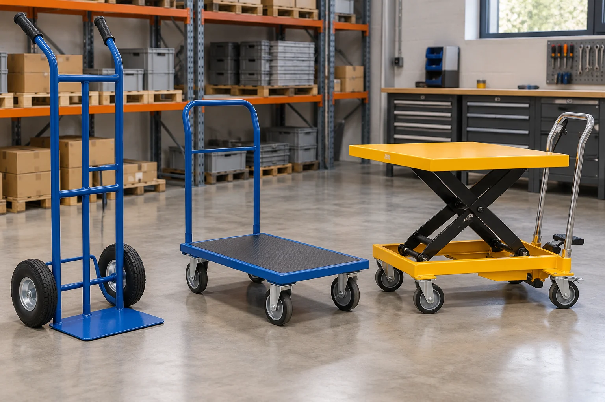
Aides à la manutention
Présentation d’un diable, d’un chariot et d’une table élévatrice.
Lire l’image
Points de vigilance. Vérifier capacité, état, freinage et compatibilité avec charge et parcours.
Principes. Choisir l’aide qui réduit port, distance et hauteur de prise.
Limites. La présence d’une aide ne garantit pas son adéquation ni la formation à son utilisation.
Les équipements de protection individuelle (EPI)
Un EPI protège une personne contre un risque qui n'a pu être supprimé ni réduit à la source. Il vient en dernier, en complément des mesures d'organisation et de protection collective, et il n'est efficace que s'il est adapté, en bon état et réellement porté.
1 · Supprimer
Éviter le risque : supprimer la manutention, l'opération dangereuse.
2 · Réduire
Alléger, fractionner, mécaniser, réorganiser le poste.
3 · Protéger
Protection collective d'abord : garde-corps, carter, aspiration, balisage.
4 · EPI
Protection individuelle en complément, ou si rien d'autre n'est possible.
| EPI | Protège contre | Points de vigilance |
|---|---|---|
| Gants (ex. EN 388 risques mécaniques, EN 374 produits chimiques) | Coupures, abrasion, perforation, produits chimiques | Modèle choisi selon le risque réel ; taille juste : un gant trop épais ou trop grand diminue la prise et pousse à serrer plus fort |
| Chaussures de sécurité (EN ISO 20345) | Chute de charge, écrasement des orteils, perforation, glissade | Semelle adaptée au sol, usure à surveiller, bien lacées : la stabilité du pied conditionne celle du dos |
| Lunettes, écran facial (ex. EN 166) | Projections, poussières, éclats | Propres, non rayées, bien ajustées ; modèle compatible avec les lunettes de vue |
| Protection auditive (ex. EN 352) | Bruit | Portée en continu pendant l'exposition ; sans port constant, la protection chute vite |
| Casque de protection (ex. EN 397) | Chute d'objets, chocs à la tête | Date de fabrication, état de la coque, jugulaire réglée |
| Vêtement haute visibilité (ex. EN ISO 20471) | Circulation d'engins et de véhicules | Propre et visible : le vêtement sali ou usé perd de son efficacité |
| Protection respiratoire (ex. masque FFP, EN 149) | Poussières, aérosols | Choix selon l'agent présent, étanchéité au visage, durée de port limitée |
Ce que doit l'employeur
- Évaluer les risques et privilégier la protection collective (art. L4121-2 du Code du travail).
- Fournir gratuitement les EPI nécessaires et appropriés, les entretenir et les remplacer (art. R4321-4).
- Informer les salariés sur les risques couverts, les conditions d'utilisation et les consignes du fabricant (art. R4323-104) ; former au port des EPI complexes comme les antichutes (art. R4323-91).
Ce que doit le salarié
- Prendre soin de sa santé et de sa sécurité, ainsi que de celles des autres (art. L4122-1).
- Utiliser les EPI conformément aux consignes reçues.
- Signaler un EPI abîmé, inadapté ou manquant, et ne pas continuer sans protection de remplacement.
Lire un EPI : marquage et catégories
Les EPI mis sur le marché européen relèvent du règlement (UE) 2016/425 et portent le marquage CE, avec une notice du fabricant. Ils sont classés en trois catégories : I (risques minimes), II (risques intermédiaires) et III (risques de conséquences très graves ou irréversibles). Le marquage CE atteste la conformité du produit ; il ne dit pas qu'il convient à votre risque : le choix reste à faire selon l'évaluation des risques du poste.
Les EPI en images
Images illustratives sans marque : sur le matériel réel, on vérifie marquages et notices.
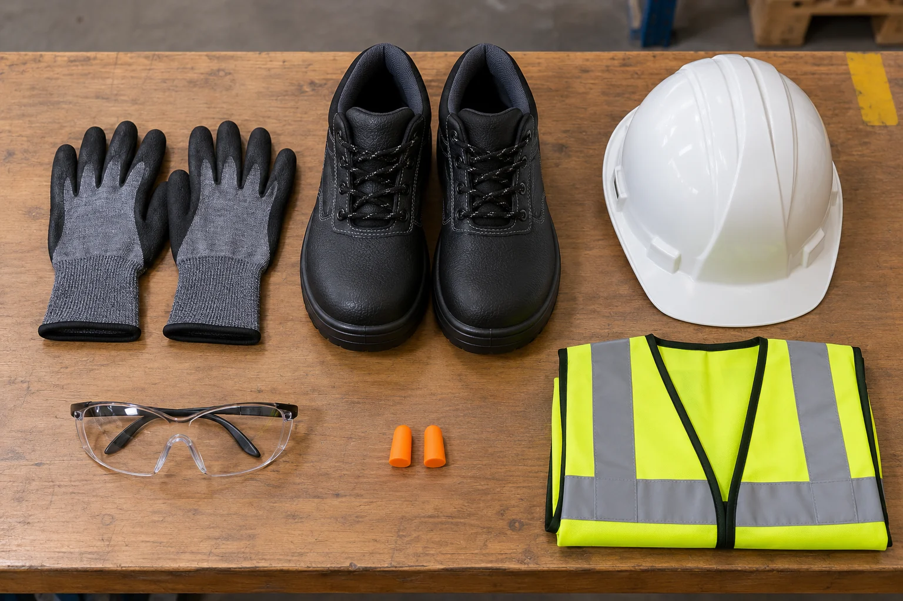
Les EPI disposés à plat
Inventaire visuel d’équipements de protection individuelle.
Lire l’image
Points de vigilance. Vérifier l’adaptation aux risques et la compatibilité des équipements.
Principes. Choisir les EPI après les mesures de prévention collective ; vérifier ajustement et état.
Limites. L’absence de marquage est une contrainte graphique : sur le matériel réel, vérifier marquages et notices. Tous les EPI ne sont pas nécessaires dans chaque situation.
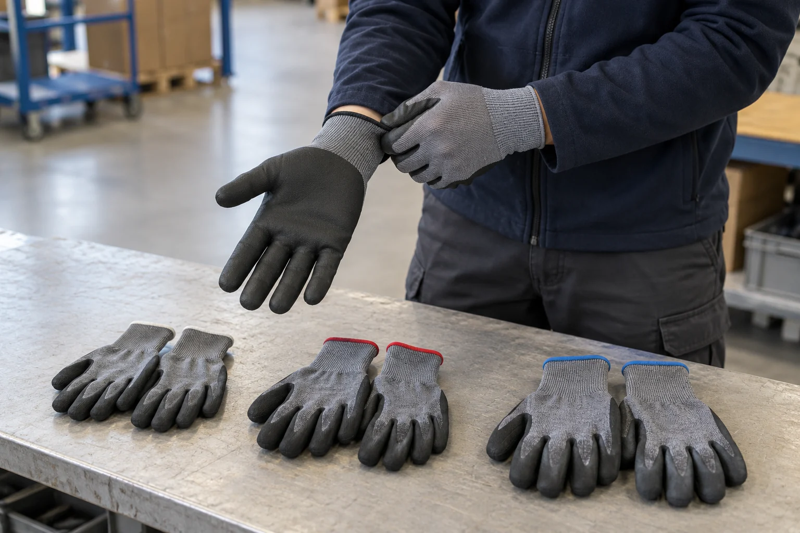
Choisir la taille de gants
Essai d’un gant et comparaison de tailles.
Lire l’image
Points de vigilance. Observer serrage, longueur des doigts, mobilité et tenue de la manchette.
Principes. Choisir une taille permettant préhension et dextérité, avec une protection adaptée au danger.
Limites. La taille et la couleur ne renseignent pas le niveau de protection ; consulter la notice du gant réel.
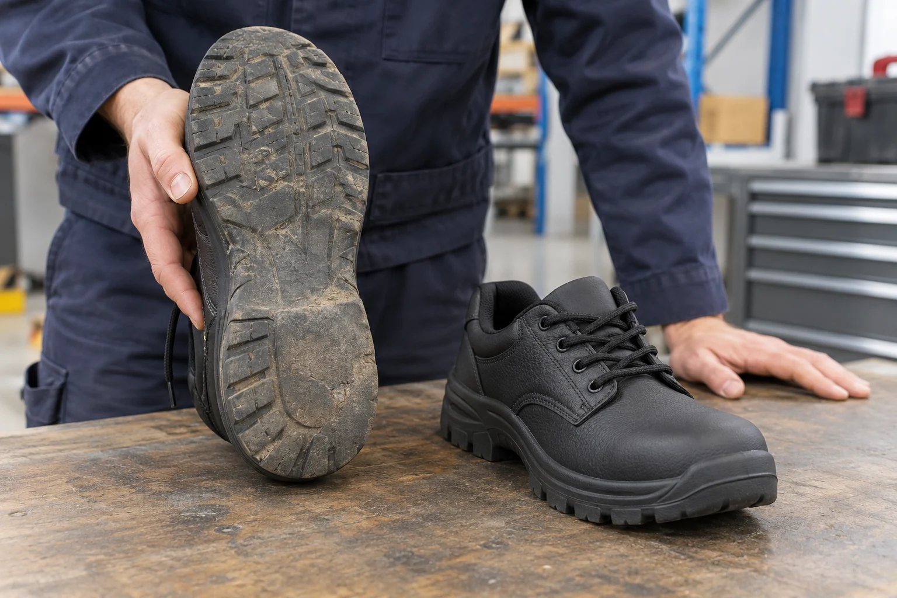
Chaussures de sécurité : contrôler l’usure
Comparaison d’une semelle usée avec une chaussure neuve.
Lire l’image
Points de vigilance. Examiner reliefs, fissures, décollement, perforation et état de la tige.
Principes. Contrôler régulièrement l’état et remplacer selon défauts, usage et notice.
Limites. Une photo de semelle ne permet ni de certifier l’adhérence ni de vérifier toutes les protections. Les chaussures illustrées sont sans marque.
Réveil musculaire — la routine avant prise de poste
Quelques minutes avant de commencer, quel que soit l'horaire. Ce n'est pas un échauffement sportif de haut niveau : c'est mettre en route ce qui va être sollicité dans la première demi-heure.
Pourquoi ça compte réellement
- Pompes veineuses activées : meilleur retour sanguin dès les premiers efforts
- Système cardiaque et nerveux mis en route progressivement plutôt que sollicités à froid
- Unités motrices et proprioception réveillées : le corps « répond » mieux, on ressent mieux ses limites
- Préparation mentale : quelques minutes pour se mettre en condition, se recentrer — d'autant plus utile en horaires décalés ou de nuit
Pourquoi c'est renforcé à l'approche de l'hiver
Un muscle froid est moins extensible et moins réactif ; par température basse, les tissus tendino-musculaires encaissent moins bien un effort brusque. Préparer son corps avant de l'exposer au froid et à l'effort est un vrai levier de prévention des blessures, au-delà du seul TMS.
Mobilisation articulaire globale 1 min
Chevilles, genoux, hanches, épaules, nuque : quelques rotations douces, sans forcer l'amplitude.
Activation cardio-vasculaire légère 1-2 min
Marche sur place, talons-fesses légers : faire monter le rythme cardiaque progressivement.
Réveil du dos et du tronc 1-2 min
Enroulé-déroulé du dos, rotations de buste contrôlées (sans charge), gainage bref.
Activation spécifique membres sollicités 1-2 min
Épaules et poignets pour le port/saisie, jambes pour la station debout et la marche prolongée.
Temps de recentrage 30 s
Quelques respirations, se projeter dans la prise de poste : c'est le volet mental de la routine.
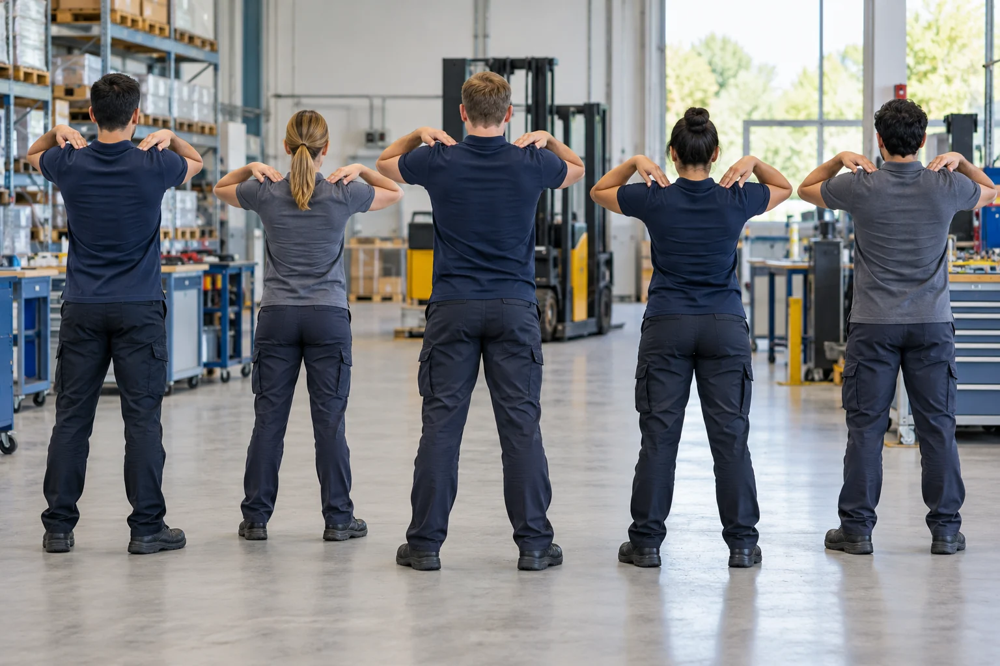
Réveil musculaire en équipe
Mobilisation douce des épaules avant la prise de poste.
Lire l’image
Points de vigilance. Rester dans une amplitude confortable, sans à-coups ni douleur ; adapter aux personnes.
Principes. Proposer des mouvements progressifs volontaires, accompagnés d’une organisation qui réduit les contraintes.
Limites. Le réveil musculaire ne remplace pas l’aménagement du poste et ne garantit pas la prévention des TMS.
Auto-évaluation
12 questions pour vérifier ce qui est acquis sur les gestes et postures. Chaque réponse s'accompagne d'une explication. Le module incendie qui suit a ses propres points de contrôle.
Transmettre mon résultat au formateur (facultatif)
Ce site ne conserve ni ne transmet rien automatiquement : c’est vous qui choisissez d’envoyer votre résultat. Repère pédagogique : 70 % (soit 9 réponses sur 12).
On quitte la prévention des TMS pour apprendre à réagir face à un début d’incendie : alerter, choisir l’extincteur, l’utiliser, puis renoncer et évacuer si besoin.
Incendie : manipuler un extincteur
Deux heures pour savoir réagir à un début d’incendie : donner l’alerte, choisir le bon extincteur, l’utiliser correctement et reconnaître le moment où il faut renoncer et évacuer. Cette séquence est une initiation : elle donne lieu à une attestation de présence, sans certification ni habilitation, et ne remplace ni la formation d’équipier de première intervention organisée par l’employeur, ni les consignes de l’établissement.
| Horaire | Séquence |
|---|---|
| 14h30–15h15 | Théorie : le feu, les classes de feu, les extincteurs, les règles d’attaque, l’alerte et l’évacuation. Démonstration du formateur. |
| 15h15–15h25 | Briefing de sécurité, rôles, mise en place de la zone d’exercice. |
| 15h25–16h15 | Pratique : manipulation de l’extincteur, puis attaque d’un feu de formation. Chaque stagiaire tire deux fois. |
| 16h15–16h30 | Débrief collectif, grille d’observation, synthèse et questionnaire de satisfaction. |
1 · Comprendre le feu
Pour qu’un feu naisse et dure, trois éléments doivent être réunis : un combustible, un comburant (l’oxygène de l’air) et une énergie d’activation (chaleur, étincelle, flamme). Éteindre, c’est supprimer l’un des trois.
Combustible
Ce qui brûle. On l’isole ou on le retire quand c’est possible, par exemple en coupant l’arrivée de gaz.
Comburant
L’oxygène. On l’écarte par étouffement : couvercle sur une poêle, jet de CO₂ ou de poudre.
Énergie
La chaleur. On la supprime par refroidissement : c’est le rôle de l’eau.
Agir tôt
Un feu se combat dans ses premières minutes. Passé ce stade, aucun extincteur portatif ne suffit.
2 · Les classes de feu
| Classe | Nature du feu | Exemples |
|---|---|---|
| A | Solides qui donnent des braises | Bois, papier, carton, tissus |
| B | Liquides ou solides qui se liquéfient | Hydrocarbures, alcools, paraffine |
| C | Gaz | Méthane, butane, propane, hydrogène |
| D | Métaux | Aluminium, magnésium, sodium, lithium |
| F | Auxiliaires de cuisson | Huiles et graisses de friture |
3 · Choisir l’extincteur
| Extincteur | Feux adaptés | Précautions |
|---|---|---|
| Eau pulvérisée, avec ou sans additif | Classe A ; avec additif, classes A et B | Utilisable sous tension (moins de 1 000 V) uniquement si l’appareil le mentionne, par une personne formée et à 1 m au moins de l’installation. |
| Poudre ABC | Classes A, B et C | Très polyvalente mais corrosive, et elle crée un nuage opaque : à éviter dans un local exigu ou sur du matériel électronique. |
| Poudre BC | Classes B et C | Mêmes réserves que la poudre ABC. |
| Dioxyde de carbone (CO₂) | Classe B | Jet très froid (environ −78 °C) : tenir l’appareil par ses poignées, ne pas toucher le cornet. Sur les braises (classe A), efficacité limitée et risque de reprise. Aérer après usage : risque d’asphyxie en local confiné. |
| Poudre D | Classe D (métaux) | À choisir selon le métal concerné ; réservé aux sites qui en ont l’usage. |
Avant de tirer, lire l’étiquette : elle indique les classes de feu admises, le mode d’emploi et, le cas échéant, la tension maximale. Pour un feu de friture (classe F), n’utiliser qu’un appareil qui porte cette mention, et jamais de jet d’eau.
En images : les agents extincteurs
Illustrations de synthèse générées par IA : elles aident à repérer les familles d’appareils sans reproduire de modèle précis. Couleurs et marquages varient selon le fabricant ; l’appareil réel et sa notice font foi.
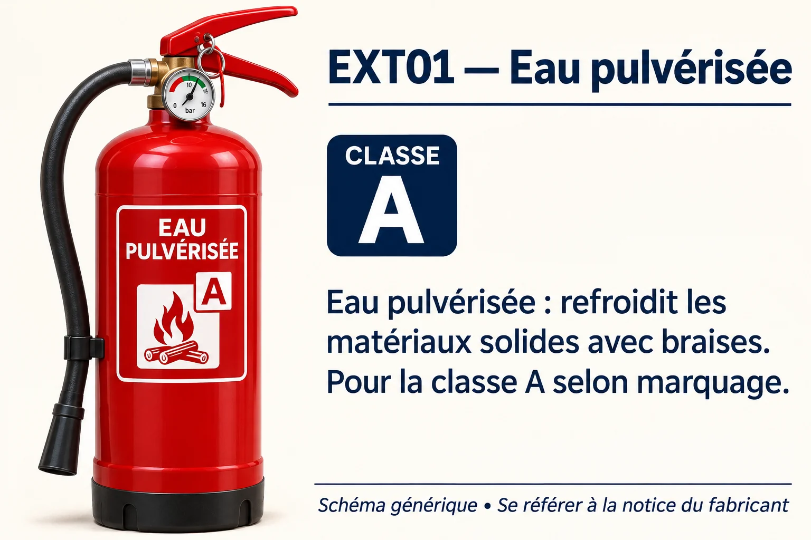
Eau pulvérisée
Appareil à eau pulvérisée, classe A.
Lire l’image
Points de vigilance. Lire le marquage de l’appareil : classe A et restrictions, notamment au voisinage d’équipements électriques sous tension.
Principes. L’eau refroidit les solides avec braises (classe A).
Limites. Illustration générique : se référer à la notice du fabricant.
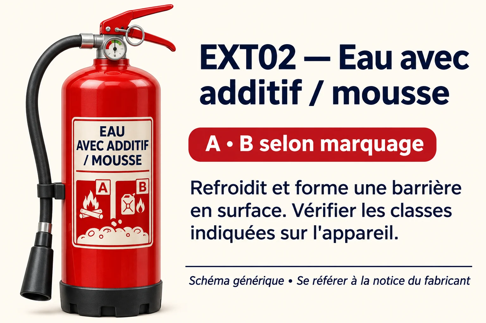
Eau avec additif / mousse
Famille d’agents à base d’eau, classes A et B selon marquage.
Lire l’image
Points de vigilance. La compatibilité avec les feux A et B dépend de la formulation et du marquage de l’appareil.
Principes. Vérifier les classes indiquées sur l’appareil ; ne pas assimiler tout additif à une homologation classe F.
Limites. Le marquage de l’appareil indique les classes réellement couvertes.
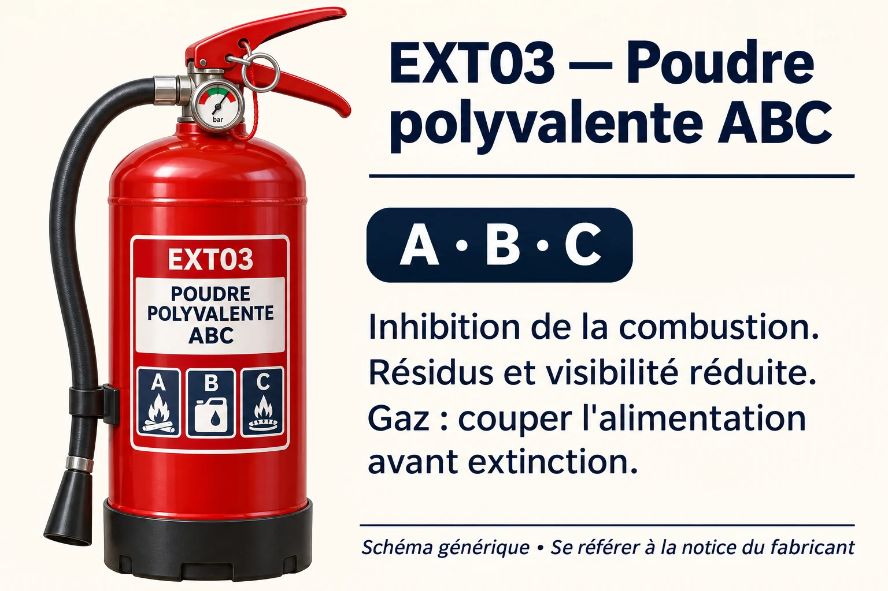
Poudre polyvalente ABC
Appareil à poudre ABC et ses précautions.
Lire l’image
Points de vigilance. Noter les résidus et la forte baisse de visibilité : éviter les locaux exigus, la poudre est corrosive pour le matériel électronique.
Principes. Pour un gaz enflammé, couper l’alimentation avant d’éteindre la flamme, afin d’éviter l’accumulation de gaz imbrûlé.
Limites. Les classes réellement couvertes dépendent du marquage de l’appareil.
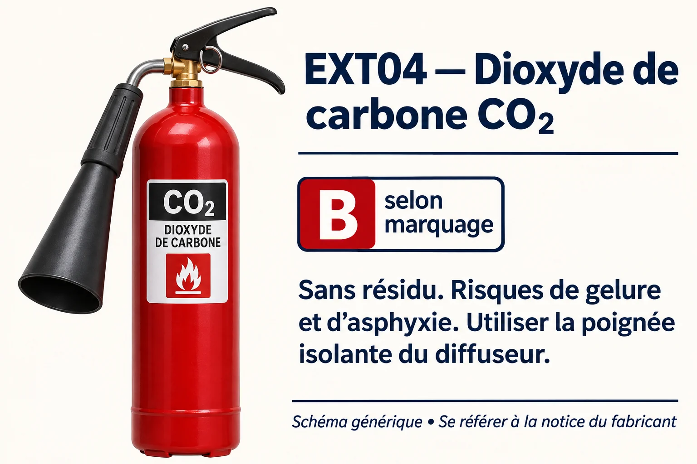
Dioxyde de carbone (CO₂)
Appareil au CO₂ à diffuseur et poignée isolante.
Lire l’image
Points de vigilance. Utiliser la poignée isolante du diffuseur : le froid peut provoquer des gelures. Risque d’asphyxie en espace confiné ; les braises peuvent se rallumer.
Principes. Décharge sans dépôt de poudre ; convient à certains feux de classe B selon marquage.
Limites. Sous tension, seul un appareil portant la mention adaptée peut être utilisé (INRS, moins de 1 000 V) ; l’image n’affirme rien de plus.
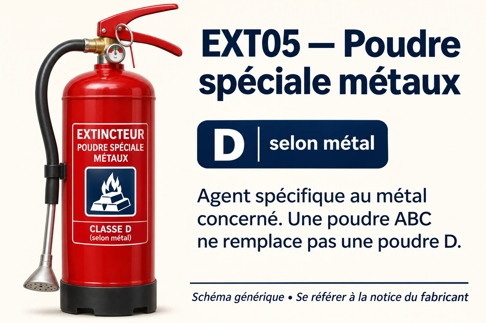
Poudre spéciale métaux
Appareil à poudre pour feux de métaux, classe D.
Lire l’image
Points de vigilance. Le choix de l’agent dépend du métal concerné.
Principes. Une poudre D n’est pas universelle et la poudre ABC ne la remplace pas.
Limites. Matériel réservé aux sites qui manipulent ces métaux, non utilisé pendant l’exercice.
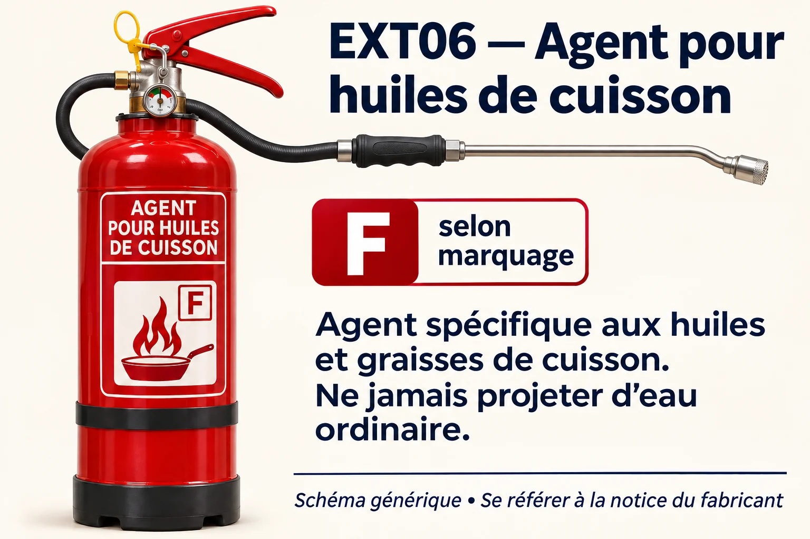
Agent pour huiles de cuisson
Appareil à marquage F avec lance dédiée.
Lire l’image
Points de vigilance. Repérer le marquage F et la lance dédiée reliée par un flexible.
Principes. L’agent spécifique refroidit et forme une barrière sur l’huile. Ne jamais projeter d’eau ordinaire sur une huile.
Limites. Dans les limites de la notice de l’appareil.
Comment ça marche : coupes de principe
Schémas génériques, non à l’échelle. Ils montrent le trajet de l’agent à la décharge, pas un plan constructeur.
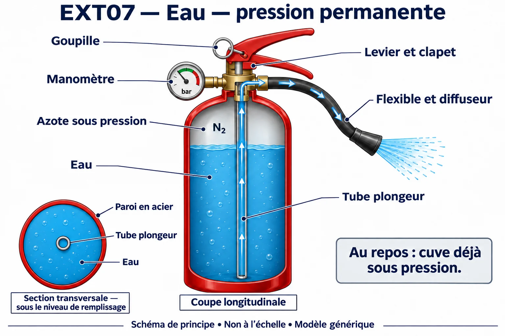
Coupe : eau à pression permanente
Vue longitudinale et section de la cuve d’un extincteur à eau.
Lire l’image
Points de vigilance. Le gaz propulseur occupe le volume supérieur, le tube plongeur prélève l’eau près du fond et la conduit au clapet puis au diffuseur.
Principes. Au repos, la cuve est déjà sous pression ; le manomètre en contrôle l’état.
Limites. Schéma de principe générique, non à l’échelle : la robinetterie varie selon le fabricant. Les flèches montrent le trajet de l’agent à la décharge.
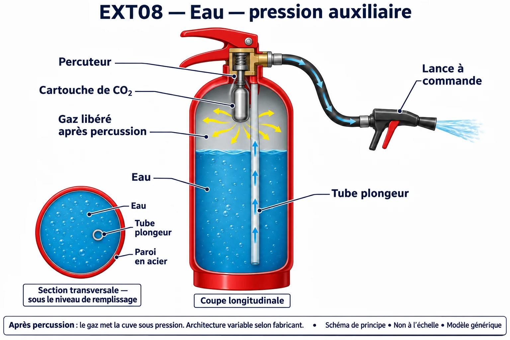
Coupe : eau à pression auxiliaire
Vue longitudinale et section de la cuve, avec cartouche et percuteur.
Lire l’image
Points de vigilance. Distinguer la cartouche de gaz, le percuteur et le tube plongeur ; l’eau rejoint la lance par ce tube.
Principes. Après percussion, le gaz libéré met la cuve sous pression.
Limites. Schéma de principe générique, non à l’échelle : la robinetterie varie selon le fabricant. Les flèches montrent le trajet de l’agent à la décharge.
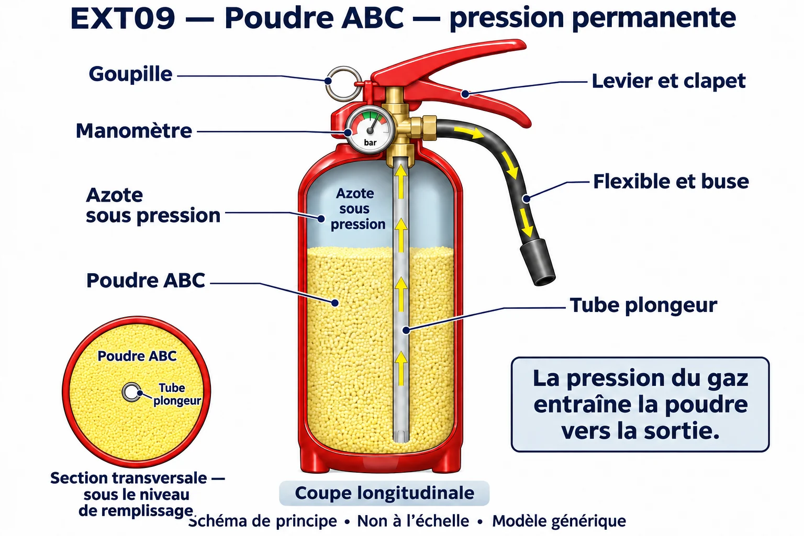
Coupe : poudre ABC à pression permanente
Vue longitudinale et section de la cuve d’un appareil à poudre.
Lire l’image
Points de vigilance. La poudre est un solide divisé ; le gaz sous pression l’entraîne vers le tube plongeur et la sortie. Ce modèle n’a pas de cartouche auxiliaire.
Principes. Ouverture du clapet, puis entraînement de la poudre par le gaz.
Limites. Schéma de principe générique, non à l’échelle : la robinetterie varie selon le fabricant. Les flèches montrent le trajet de l’agent à la décharge.
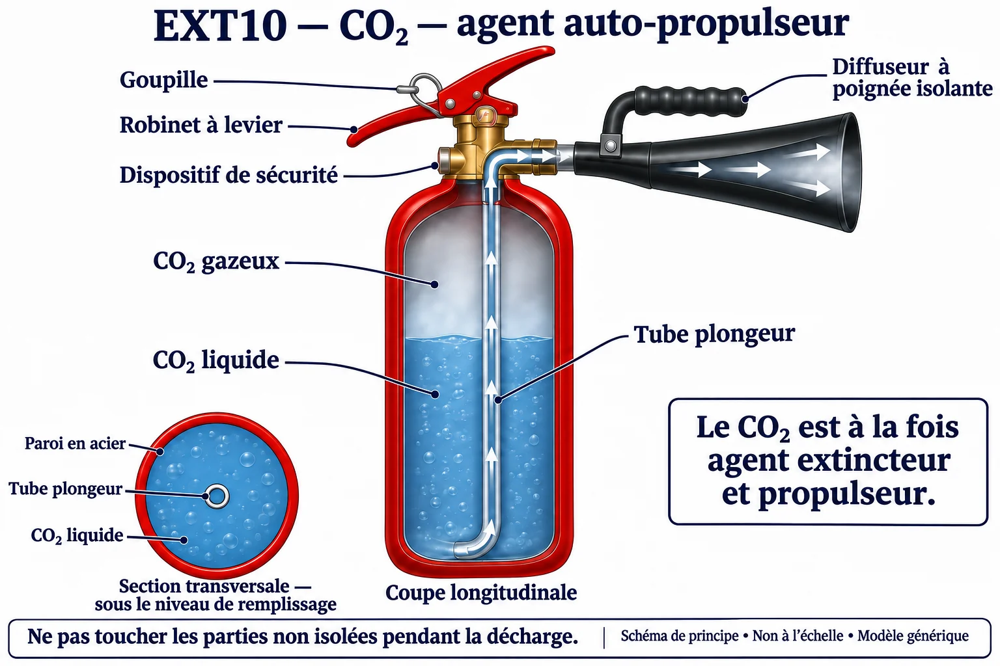
Coupe : CO₂ auto-propulseur
Vue longitudinale et section du cylindre d’un extincteur au CO₂.
Lire l’image
Points de vigilance. Le cylindre contient du CO₂ liquide en équilibre avec sa phase gazeuse ; le tube plongeur prélève le liquide. Pas de cartouche ni de manomètre.
Principes. Le CO₂ est à la fois agent extincteur et propulseur ; ne pas toucher les parties non isolées pendant la décharge.
Limites. Schéma de principe générique, non à l’échelle : la robinetterie varie selon le fabricant. Les flèches montrent le trajet de l’agent à la décharge.
4 · Réagir à un début d’incendie
Dans l’ordre
- Alerter : déclencher l’alarme et prévenir les secours selon la consigne du site (18 ou 112).
- Attaquer, seulement s’il s’agit d’un début d’incendie et si la sortie reste dégagée derrière soi.
- Couper les énergies si c’est possible sans risque.
- Évacuer vers le point de rassemblement et se faire connaître.
Renoncer et évacuer si
- la fumée devient dense ou la chaleur trop forte ;
- le feu dépasse son point de départ ou monte vers le plafond ;
- l’extincteur est vide, inadapté ou inefficace ;
- c’est un feu de gaz et l’arrivée ne peut pas être coupée ;
- l’issue de repli n’est plus assurée, ou si l’on a peur.
5 · Utiliser l’extincteur : les gestes
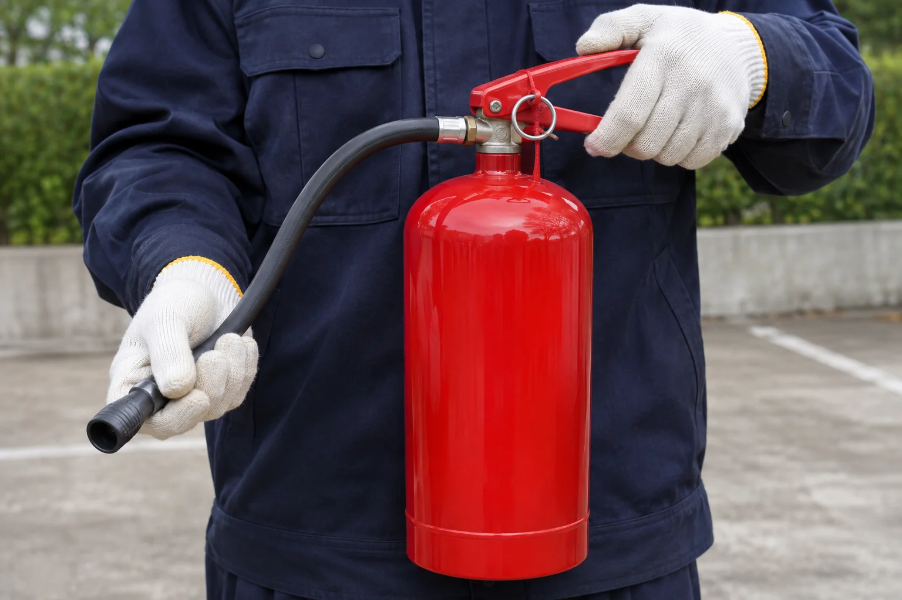
Les trois repères de l’extincteur
Gros plan sur la goupille, la poignée de portage et le levier, flexible tenu en main.
Lire l’image
Points de vigilance. Repérer la goupille à anneau, la poignée de portage, le levier de commande et le flexible ; le visage est hors cadre.
Principes. Identifier ces repères avant de tirer, maintenir le flexible pour maîtriser le jet, lire l’étiquette et la notice.
Limites. Appareil d’exercice sans marquage : l’image ne permet pas d’identifier l’agent ni les classes de feu.
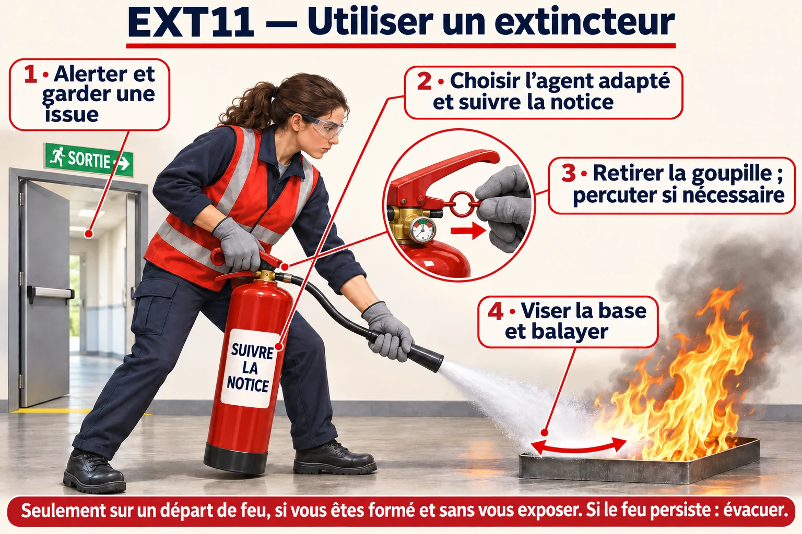
Utiliser un extincteur : les étapes
Alerter, choisir l’agent, retirer la goupille, viser la base et balayer.
Lire l’image
Points de vigilance. Suivre l’enchaînement : alerter et garder une issue, choisir l’agent, retirer la goupille (percuter si nécessaire), viser la base et balayer.
Principes. Intervenir seulement sur un départ de feu, formé et sans s’exposer ; évacuer si le feu persiste.
Limites. La notice de l’appareil prime (la percussion de cartouche dépend du modèle).
| Étape | Geste |
|---|---|
| 1 | Vérifier que la classe de l’appareil correspond au feu. |
| 2 | Retirer la goupille, ce qui brise le scellé. |
| 3 | Si l’appareil l’exige, le percuter pour libérer le gaz de la cartouche, sans se placer au-dessus. |
| 4 | Approcher en restant bas, pour éviter fumées et vapeurs chaudes. |
| 5 | Se placer de profil et, de préférence, dos au vent. |
| 6 | Presser la poignée et diriger le jet vers la base des flammes, en balayant. |
| 7 | Avancer à mesure que le feu recule, rester face au foyer, puis surveiller la reprise. |
En exercice : la bonne posture et le contre-exemple
À comparer : à gauche la posture attendue, à droite un tir trop haut que le formateur interrompt.
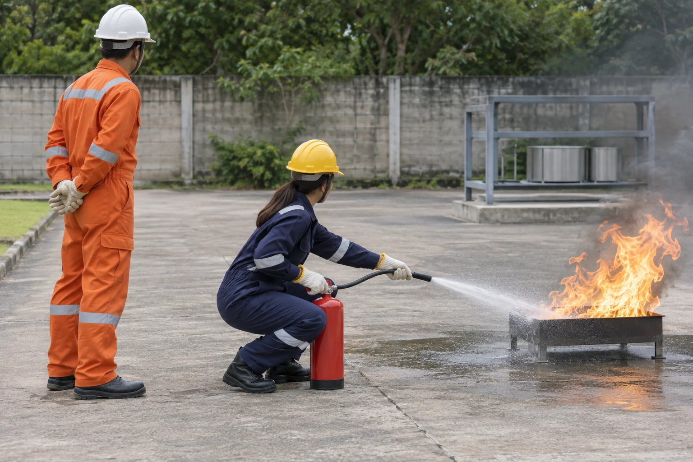
Posture d’attaque en exercice
Exercice encadré sur bac : posture basse, jet vers la base des flammes.
Lire l’image
Points de vigilance. Observer la posture basse et stable, le jet dirigé vers la base des flammes, la voie de repli derrière l’opératrice et le formateur en retrait.
Principes. Rester bas, de profil, viser la base, garder une issue dégagée derrière soi.
Limites. Le bac est alimenté en gaz et piloté par le formateur : la scène ne représente pas une fuite de gaz à éteindre sans coupure.
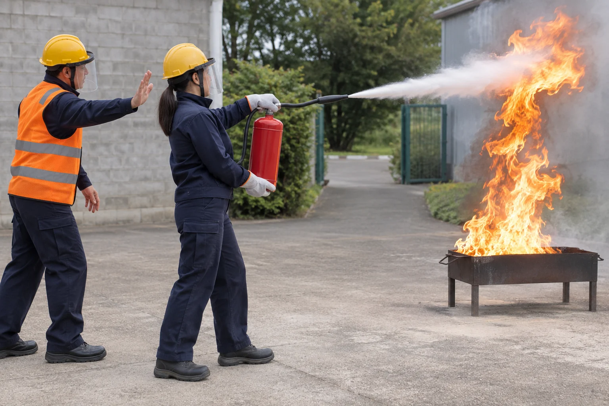
Tir trop haut — contre-exemple
Le jet vise le haut des flammes et manque leur base ; le formateur interrompt le geste.
Lire l’image
Points de vigilance. Repérer le jet trop haut qui manque la base des flammes, la posture debout et le geste d’arrêt du formateur.
Principes. Viser la base des flammes, rester bas, s’arrêter dès que le formateur le demande.
Limites. Contre-exemple pédagogique, à ne pas reproduire. En exercice, le formateur interrompt tout tir mal dirigé.
6 · L’exercice pratique
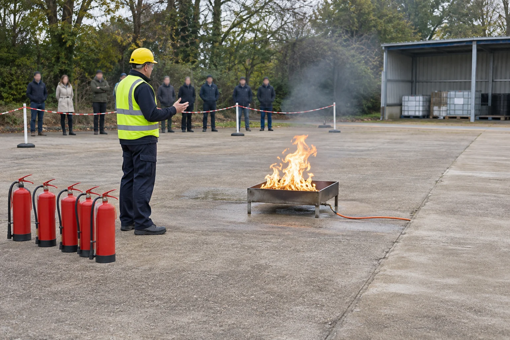
Zone d’exercice balisée
Balisage, observateurs à l’écart, extincteurs alignés, formateur près du bac.
Lire l’image
Points de vigilance. Vérifier que les observateurs restent derrière le balisage, hors de l’axe du jet et des fumées, et que le formateur garde la maîtrise de l’alimentation du bac.
Principes. Baliser la zone, séparer observateurs et tireur, un seul tireur à la fois, matériel rangé à l’écart.
Limites. La distance d’exercice dépend du dispositif et des consignes du formateur ; l’image ne remplace pas le briefing sur place.
Déroulement
- Manipulation à vide : décrocher l’appareil, repérer la goupille, la poignée et le tuyau.
- Attaque d’un feu de formation sur bac à flammes, un stagiaire à la fois, sous le contrôle du formateur.
- Deux tirs par stagiaire, avec des positions et des appareils différents si le matériel le permet.
- Les autres stagiaires observent avec la grille et donnent un retour au débrief.
Règles de sécurité
- Zone dégagée et balisée, observateurs derrière la ligne, en dehors de l’axe du vent.
- On ne tire que sur ordre du formateur, une seule personne à la fois.
- On ne tourne jamais le dos au foyer et on ne s’en approche pas plus près que le formateur ne l’a indiqué.
- On signale tout malaise, toute gêne ou tout doute et on s’arrête.
- Tenue adaptée : vêtements non synthétiques de préférence, chaussures fermées, cheveux longs attachés, pas de bijoux pendants ; consignes complémentaires données lors du briefing.
- Un extincteur de réserve et la trousse de secours restent à portée du formateur ; toute brûlure est signalée immédiatement.
7 · Points de contrôle
Q1. Quels sont les trois éléments nécessaires à un feu ?
Voir la réponse
Un combustible, un comburant (l’oxygène) et une énergie d’activation. Supprimer l’un des trois éteint le feu.
Q2. Où dirige-t-on le jet de l’extincteur ?
Voir la réponse
Vers la base des flammes, en balayant, et non vers le haut des flammes ou la fumée.
Q3. Un feu de gaz brûle à un raccord. Peut-on l’éteindre ?
Voir la réponse
Seulement si l’on peut couper l’arrivée de gaz. Sinon, on n’éteint pas la flamme : on évacue et on alerte.
Q4. Quand faut-il renoncer à attaquer le feu ?
Voir la réponse
Quand le feu a pris de l’ampleur, que la fumée est dense, que l’extincteur est inadapté ou vide, que l’issue de repli n’est pas assurée, ou en cas de peur. On alerte et on évacue.
8 · Vidéos pour aller plus loin
Série « Incendie : définitions, prévention et actions » de l’INRS (mai 2025) et film d’animation Napo. Ces vidéos sont conçues comme supports de présentation, pas comme outil d’autoformation : le formateur en choisit des extraits. Aucune ne remplace l’exercice pratique. Elles s’ouvrent sur YouTube dans un nouvel onglet. Voir la série complète sur inrs.fr →
1 – Comprendre ce qu’est un incendie
Triangle du feu, propagation, chaleur, gaz et fumées, cinq classes de feu. Durée : 6 min 12.
Voir sur YouTube →2 – Moyens d’extinction
Extincteurs, RIA, colonnes sèches et humides, extinction automatique ; choix de l’agent et de l’extincteur selon la classe de feu. Durée : 8 min 25.
Voir sur YouTube →6 – Intervention sur l’incendie
Qui intervient : tout le personnel en premier, équipiers de première et de seconde intervention, équipier technique, relais. Ne montre pas les gestes de l’extincteur. Durée : 3 min 32.
Voir sur YouTube →7 – Évacuation des locaux
Évacuer dès l’alarme, plans d’évacuation, point de rassemblement, exercices semestriels, rôles du guide-file et du serre-file. Durée : 7 min 55.
Voir sur YouTube →Napo dans… Alerte au feu !
Film d’animation INRS : risques d’incendie et d’explosion au travail. Durée : 8 min 32.
Voir sur YouTube →Calculateur de criticité (G × P)
Le même outil que celui utilisé sur les autres plateformes CONSULTEAM : estimez rapidement la criticité d'une situation à risque en croisant Gravité et Probabilité.
Au-delà de 12 : action prioritaire à engager sans délai. Entre 6 et 12 : à traiter, planifier une action. En dessous de 6 : vigilance courante.
Glossaire
Les termes utilisés pendant la journée, en langage simple. Les définitions réglementaires renvoient aux articles cités dans le cadre réglementaire.
Aptitude médicale
Avis du médecin du travail sur la compatibilité d’un salarié avec un poste. Pour la manutention, elle est requise au-delà de 55 kg portés habituellement (art. R4541-9).
Charge physique de travail
Ensemble des efforts physiques demandés par le travail : postures, port de charges, déplacements, répétition des gestes.
Classe de feu
Catégorie de feu selon ce qui brûle : A solides, B liquides, C gaz, D métaux, F huiles et graisses de cuisson. Elle détermine l’extincteur à utiliser.
Contrainte biomécanique
Force ou posture que le travail impose au corps (articulations, muscles, tendons, disques).
Criticité (G × P)
Niveau de risque estimé en multipliant la gravité (G) par la probabilité (P). Il aide à hiérarchiser les actions, il ne remplace pas l’analyse de la situation.
Disque intervertébral
Coussinet situé entre deux vertèbres. Il encaisse les pressions de la colonne ; flexion et torsion répétées sous charge le sollicitent fortement.
Document unique (DUERP)
Document qui recense les risques professionnels de l’entreprise et les actions de prévention. Il est mis à jour régulièrement.
EPI
Équipement de protection individuelle : gants, chaussures, lunettes, casque, protection auditive, vêtement haute visibilité… Il vient en dernier, après la suppression ou la réduction du risque et la protection collective.
Équipier de première intervention
Salarié formé pour donner l’alerte, attaquer un début d’incendie avec les moyens du site et participer à l’évacuation. La séquence de cette journée est une initiation, pas une désignation.
Ergonomie
Adaptation du travail à la personne : poste, outils, organisation, plutôt que l’inverse.
Facteurs de risque (TMS)
Biomécaniques (efforts, postures, répétition), organisationnels, psychosociaux et environnementaux (froid, vibrations). Ils se cumulent.
Geste répétitif
Mouvement reproduit à fréquence élevée sans récupération suffisante : facteur de risque pour poignets, coudes et épaules.
Lombalgie
Douleur du bas du dos. Elle peut avoir des origines multiples ; le travail physique, la manutention et les postures contraintes en font partie.
Manutention manuelle
Transport ou soutien d’une charge par l’effort physique d’une ou plusieurs personnes : lever, poser, pousser, tirer, porter, déplacer (art. R4541-2).
Marquage CE
Marque par laquelle le fabricant déclare que l’EPI respecte le règlement (UE) 2016/425. Il ne dit rien de l’adéquation à un risque précis : lire la notice.
Catégories d’EPI (I, II, III)
Niveaux de risque couverts. Catégorie I : risques minimes ; catégorie III : risques pouvant causer des conséquences très graves (mortelles ou irréversibles) ; catégorie II : les autres.
Moment de force
Effet de rotation d’une force : charge × distance au corps. Une charge tenue loin du corps sollicite beaucoup plus le dos qu’une charge collée au tronc.
Posture statique
Position maintenue longtemps (debout, assis, penché) : fatigue musculaire et gêne circulatoire même sans effort important.
Prévention collective
Mesures qui protègent tout le monde : aménagement, garde-corps, aides mécaniques, organisation. Elle passe avant la protection individuelle (art. L4121-2).
Proprioception
Sens de la position et du mouvement du corps. Le réveil musculaire contribue à la mettre en route.
Rachis
Colonne vertébrale : cervicale, dorsale, lombaire, sacrum et coccyx.
TMS
Troubles musculosquelettiques : affections des muscles, tendons, nerfs et articulations liées au travail. Ils sont la première cause de maladie professionnelle reconnue.
Triangle du feu
Les trois éléments nécessaires à un feu : combustible, comburant (oxygène) et énergie d’activation. Supprimer l’un des trois l’éteint.
Vidéothèque
Des ressources pour prolonger la session. Les liens ouvrent le site source dans un nouvel onglet ; les recherches vidéo renvoient vers des résultats à choisir par vous-même. Les cinq vidéos INRS sur l’incendie sont regroupées dans le module 9.
Vidéos de prévention (TMS, anatomie, ergonomie)
Vidéos d’organismes de prévention, sélectionnées pour prolonger la session. Elles s’ouvrent sur YouTube dans un nouvel onglet ; leur contenu relève de leurs auteurs.
Napo dans… Allégez la charge !
Film d’animation INRS sur la manutention manuelle.
Voir sur YouTube →TMS – Anatomie de l’épaule
Comprendre l’articulation pour comprendre le risque. Durée : 2 min 02.
Voir sur YouTube →TMS – Anatomie du rachis lombaire
La colonne lombaire, zone la plus sollicitée en manutention. Durée : 2 min 06.
Voir sur YouTube →TMS – Le meilleur des mondes : logistique et marges de manœuvre
Film INRS sur la logistique et les marges de manœuvre. Durée : 7 min 46.
Voir sur YouTube →Exosquelettes au travail : comment s’y préparer ?
Aides techniques et prévention : repères INRS.
Voir sur YouTube →Les TMS, c’est quoi ?
Introduction aux TMS par la Carsat Hauts-de-France. Durée : 6 min 22.
Voir sur YouTube →2 minutes entreprise : les TMS
Exemple d’action de prévention en entreprise. Durée : 2 min 21.
Voir sur YouTube →L’ergonomie au poste de travail
Repères rapides pour régler son poste. Durée : 2 min 09.
Voir sur YouTube →Prévention des TMS – motion design
Animation de sensibilisation, transposable à d’autres secteurs. Durée : 4 min 13.
Voir sur YouTube →Sites de référence
INRS — Troubles musculo-squelettiques
Page de référence INRS sur les TMS : mécanismes, facteurs de risque, démarche de prévention.
Voir sur inrs.fr →INRS — Site officiel
Accès à la recherche INRS (manutention, EPI, gestes et postures, brochures et outils).
Ouvrir inrs.fr →Napo — films de prévention
Personnage d'animation utilisé dans la prévention des risques en Europe ; films courts sur la manutention et les EPI.
Voir napofilm.net →Vidéos : manutention manuelle (INRS)
Recherche vidéo à parcourir ; privilégier les chaînes officielles INRS.
Lancer la recherche →Vidéos : EPI, bien les choisir et les porter
Recherche vidéo à parcourir ; privilégier les sources institutionnelles.
Lancer la recherche →Assurance Maladie – Risques professionnels
Ressources de l'Assurance Maladie à destination des entreprises sur les TMS et la prévention.
Voir sur ameli.fr →Cadre réglementaire & sources
Textes de référence
- Code du travail, art. R4541-2 — définition de la manutention manuelle : transport ou soutien d'une charge exigeant l'effort physique d'un ou plusieurs travailleurs.
- Art. R4541-3 — éviter la manutention manuelle par l'organisation du travail et les moyens appropriés, notamment mécaniques.
- Art. R4541-5 — lorsque la manutention ne peut être évitée, évaluer les risques et aménager les postes, avec des aides mécaniques ou des accessoires de préhension adaptés.
- Art. R4541-8 — informer les travailleurs sur les risques et assurer une formation adéquate à la sécurité, essentiellement pratique.
- Art. R4541-9 — au-delà de 55 kg portés par un homme, l'aptitude médicale du médecin du travail est requise ; la limite réglementaire absolue est de 105 kg. Ce n'est pas un « maximum légal » fixé à 55 kg : c'est un seuil de vigilance médicale.
- Norme NF X35-109 — valeurs limites recommandées de port de charges pour limiter le risque
- Art. L4121-2 — principes généraux de prévention, dont la priorité donnée à la protection collective.
- Art. R4321-4, R4323-91, R4323-104 — fourniture, entretien, formation et information relatives aux EPI.
- Art. L4122-1 — obligations du salarié.
- Art. R4227-29 — premier secours contre l'incendie : extincteurs en nombre suffisant et en bon état, au moins un appareil à eau pulvérisée de 6 litres pour 200 m² de plancher et au moins un par niveau, et extincteurs appropriés aux risques particuliers (notamment électriques).
- Art. R4227-39 — exercices et essais périodiques de la consigne de sécurité incendie, dont l'emploi des moyens de premier secours, au moins tous les six mois.
- Règlement (UE) 2016/425 — EPI : exigences, marquage CE, catégories I à III.
Sources
- Assurance Maladie – Risques professionnels : les TMS, pourquoi et comment agir (chiffres 2024)
- INRS : TMS, statistiques (page mise à jour le 27/03/2025)
- Carsat Sud-Est : les troubles musculosquelettiques
- Carsat Sud-Est : Manutentions manuelles, une aide pratique (DI 159, 12/2022)
- Légifrance — textes du Code du travail cités (à consulter dans leur version en vigueur)
- INRS — méthodologie d'analyse de la charge physique de travail (démarche de référence de cette plateforme, hors habilitation PRAP)